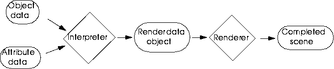
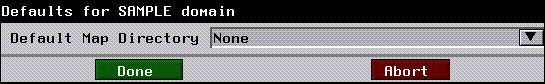

Rendering is the process of melding geometrical data and attributes of an object (such as surface texture data, opacity, etc.) into a finished scene. Rendering is accomplished by software packages collectively referred to as renderers. Renderers operate on data which is derived from the geometry and attributes of objects in a scene, and then parsed by an interpreter. Figure 9.1 provides a conceptual view of the rendering process.
A Conceptual Overview of Rendering

Attributes are variables which control some aspect of the appearance of an object in a final, rendered scene. Examples of attributes include opacity, reflectivity, and color. In addition, you can define your own attributes to meet your particular rendering needs.
Attributes
Attribute Domains
An attribute domain is a set of attributes which are defined for a particular renderer. Different attribute domains are designed to accommodate different rendering requirements. Examples of attribute domains include GL Shade, which is designed to make optimal use of the internal rendering hardware of SGI workstations, and the render domain, which is for use with N-Render.
Attribute Domain Hierarchy
Attribute domains are instances of CLOS classes. As a result, a hierarchy of domains can be constructed, with domains at lower points in the hierarchy inheriting attributes from domains at higher levels. The N·World domain hierarchy is based on the Basic Domain. Beneath this is the render domain, which is in turn followed by various domains defined for specific renderers (Figure 9.2 illustrates this basic hierarchy).
An interpreter must determine, or derive, attribute values for objects in a scene. This is accomplished by traversing attribute hierarchies on objects in a scene. For a given attribute on a given body, the interpreter first determines whether its value has been set specifically for that body. Only attributes which are object-settable can have values defined on a particular object. In the domains which are defined for N·World, only mappers and a base-material are object settable, but you can define any attribute in your domains to be object-settable.
Attribute Values for Bodies
Attribute Values for Face Parts
Attribute values for face parts are derived somewhat differently than for bodies. If no explicit attribute values have been assigned for a face part, then it inherits attribute values from the material of its parent object. However, if even a single attribute value is set explicitly for a face part, then all attribute values for that part revert to the values defined in the face parts base material. If no base material is defined, domain defaults are used. This can result in parts having dramatically different appearances than the objects they're associated with. You can avoid this complication by assigning the material of the object as the base attribute of the face part. Then, when a face part attribute value is set explicitly and the other values in the domain revert to default, the default value is obtained from the base material, which is in turn the material of the face parts object.
Surface Contexts
The above traversal path is relatively straightforward for terminal objects. However, it is often the case that a single body will be referenced by numerous objects. How, then, to determine which materials to use to derive attribute values? The solution is provided by a device called a surface-context. A surface context is defined by a BDI and a render domain. For a given render domain, there is only one context for each bdi, and thus for each object. This relationship provides a way of pinpointing a specific object and domain from which to derive attribute values.
Derived Attribute Values: an Example
Consider the following simplified example:
Defining an attribute domain is relatively straightforward. Since domains are CLOS classes, many elements of the declaration should be familiar. Define your new domains with
Defining Attributes and Attribute DomainsATTR:DEFINE-ATTRIBUTE-DOMAIN, using the generalized form:
(ATTR:DEFINE-ATTRIBUTE-DOMAIN domain-name &KEY depends-on if-exists pretty-name domain-properties)
:default-map-directory - A default directory for texture maps.
:default-map-type - A default filetype for texture maps.
:default-machine-type - A default for the machine your applications are most likely to encounter.
Example
The following code defines the sample domain:
(attr:define-attribute-domain :SAMPLE
:pretty-name "Sample"
:depends-on :render
:domain-properties
`(:default-map-directory "/usr/local/"
:default-map-type :RGB
:default-machine-type :MAC))
Defining Attributes
Attributes are defined with ATTR:DEFINE-NAMED-ATTRIBUTE, which has the following general form:
(ATTR:DEFINE-NAMED-ATTRIBUTE attribute-id &KEY name domain value-type element-types
default-value documentation properties)
Example
Now we'll use ATTR:DEFINE-NAMED-ATTRIBUTE to define two attributes, :blivet and :foo, for our new :sample domain.
(ATTR:DEFINE-NAMED-ATTRIBUTE :blivet
:domain :SAMPLE
:documentation "A new attribute, called blivet"
:element-types `(3d::surface 3d::surface-object))
(attr:define-named-attribute :foo
:domain :SAMPLE
:documentation "A new attribute, called blivet"
:element-types `(3d:surface 3d:surface-object)
:default-value (gi:make-rgb-color 0.5 0.5 0.5))
An Attribute Definition Macro
Because the attributes you're defining share many properties, you can define a macro to simplify and streamline the attribute definition process. In addition, by including the domain name in the name of the macro, you can provide a clear link in your code between the attributes you're defining and the domain you're defining them for. Here's an example attribute definition macro:
(defmacro DEF-SAMPLE-ATTRIBUTE (id &rest props)
(unless (getf props :domain)
(setf (getf props :domain) :sample))
(if (member :conditions props)
\Q(attr:define-attribute-parameter ,id
:element-types `(3d:surface 3d:surface-object)
,@props)
\Q(attr:define-named-attribute ,id
:element-types `(3d:surfaceU 3d:surface-object)
,@props)))
Understanding Element-Types
An attributes element-type determines which parts of a model or scene can be attributed by a given attribute. These include surfaces (3d::surface), surface-objects (3d:surface-object), lights (3d:light-mixin). Generally, if you want your attributes to apply to geometry objects, use 3d:surface-object.
Figure 9.3 details the anatomy of the Materials Editor window. This figure shows the Materials Editor with the
Adding Your Domain to the Materials Editor:sample domain as the current domain. The examples we'll be presenting will result in menus that look like those in Figure 9.3.
1. If it is open, close the Materials Editor
2. Create a new Materials Editor window with RA:MAKE-ATTRIBUTES-WINDOW function.
(RA:MAKE-ATTRIBUTES-WINDOW)
#<MULTIPROCESSING:PROCESS attributes wait for events @ #x198e3002>
:INTERNAL
Creating Attributes Editor Menus
The menus for defined attribute domains are created when the Materials Editor window is created. The function which creates this window (ra:make-attributes-window) calls several generic functions which define and create the attribute fields themselves. You'll have to write your own methods for these generic functions which apply to your own attribute domain. Table 9.3 lists these generic functions and summarizes their effects:
Defining the Parameters Menu
The parameters menu appears when you (CLICK-L) on the defaults button at the bottom of the Materials Editor window (Figure 9.3). Although this field is optional, it provides a convenient way for users to manipulate important attribute domain parameters such as default directories and default values for variables.
(RA:MAKE-RENDER-PARAMETER-FIELDS ((domain (eq :domain-id)
(ui:make-container-field
(list
(your field definitions)))))
(defmethod MAKE-RENDER-PARAMETER-FIELDS ((self (eql :SAMPLE)))
(ui:make-container-field
(list
(ui:make-directory-field :outer-label " Default Map Directory"
:choose-with-pop-up t
:width (- *attributes-window-width* *attributes-label-width* 6)
:property-list `(:resize-for-window t)
:value-object (ui:make-variable `*nichimen-map-dir*)))
:equalize-label-sizes-p t))

Creating Attribute Fields
Attribute fields have a slightly different structure than ordinary fields, in that they are defined within a special type of container called an attribute-source-field.
(RA:ATTR-SOURCE-VARIABLE attribute-id)
RA:ATTR-VARIABLE:
(RA:ATTR-VARIABLE attribute-id)
RA:MAKE-ATTRIBUTE-SOURCE-FIELD form, e.g.:
(RA:MAKE-ATTRIBUTE-SOURCE-FIELD attribute-id
(field-definition) :attr-source-variable attribute-id)
RA:MAKE-ATTRIBUTES-MENU-FOR-DOMAIN. In this example, we'll define fields for our two attributes:
(defmethod make-sample-fields ()
(let ((mbf-width 100))
(ui:make-container-field
(list
(make-attribute-source-field
(ui:make-color-field
:outer-label "Foo"
:value-object (attr-variable :foo))
:value-object (attr-source-variable :foo))
(make-attribute-source-field
(ui:make-slider-field
:numeric-type `(float 0.0 2.0 2)
:outer-label "Blivet"
:value-object (attr-variable :blivet)
:redraw-on-select-p t)
:value-object (attr-source-variable :blivet)))
:width *attributes-window-width*
:height (- *attributes-window-height* 450)
:equalize-label-sizes-p t
:resizable-p t)))
ui:make-attribute-source-field form.
attr:attr-source-variable.
Defining Command Fields
Command fields are buttons which respond to user input (such as a (CLICK-L) by executing a select-method. You can design command fields to serve any purpose, but you'll typically need to define at least one command field which will call your interpreter function when a user is ready to export or render an image. You define command fields for the Materials Window in much the same way you do in other contexts, with the exception that you do so within a method, and not as part of the field definition function.
(defmethod MAKE-COMMAND-FIELDS ((domain (eql :sample)))
(list
(ui:make-command-field `export-function-name
:label "Export"
:documentation "L: Export the current object, after applying current
attributes. M: Export the current object" :expose-test (ui:var-test `*current-attribute-domain-symbol* :sample)
:width 80
:height 23
:justification :center)))
Saving Parameters to a Preference File
If you wish your users to be able to save their domain preferences to a file, you must provide a way for them to do so. Generally, domain preferences are stored in the .ngc subdirectory of the users home directory:
~{user}/.ngc/{domain-name}-preferences.lisp
(defparameter *sample-map-dir* "directory-name"
(defmethod save-preferences-file ((domain (eql :SAMPLE)))
(with-open-file (stream
"~/.ngc/sample-preferences.lisp"
:direction :output
:if-does-not-exist :create
:if-exists :new-version)
(format stream "(*sample-map-dir* \"~a\"")
))
You can use the Materials Editor to modify attributes, or you can manipulate attribute values programmatically.
Manipulating Attributes, Sets, and Domains
Retrieving Attribute Domains
There are several functions you can use which return the name of currently defined attribute domains.
Finding a specific domain
You can find a specific domain with the ATTR:FIND-DOMAIN. You must specify the name of a domain as an argument to this function:
(ATTR:FIND-DOMAIN domain-name &OPTIONAL if-not-found error-string)
(attr:find-domain :sample)
#<DOMAIN :sample>
Returning the Current Domain
ATTR:CURRENT-DOMAIN returns the name of the current attribute domain:
(ATTR:CURRENT-DOMAIN)
#<DOMAIN :sample>
attr:*current-attribute-domain* variable.
You can also obtain the current attribute domain id with
ATTR:CURRENT-DOMAIN-ID:
(ATTR:CURRENT-DOMAIN-ID)
:GL
Changing the Current Domain
You can select a new domain to be the current domain by clicking on its button in the Current Material section of the Materials Editor menu. You can also useATTR:MAKE-ATTRIBUTE-DOMAIN-CURRENT to achieve the same effect:
(ATTR:MAKE-ATTRIBUTE-DOMAIN-CURRENT defined-domain)
Retrieving materials
ATTR:DEFINED-ATTRIBUTE-SETS-LIST returns a list of all currently defined materials:
(ATTR:DEFINED-ATTRIBUTE-SETS-LIST &OPTIONAL domains)
(#<ATTRIBUTE-SET "Test-material" 419348634>
#<ATTRIBUTE-SET "initial-attributes" 316703242>
#<ATTRIBUTE-SET "material-1" 318025290>)
Retrieving a Specific material
Given the list generated by attr:defined-attribute-sets-list, ATTR::FIND-ATTRIBUTE-SET-IN-LIST returns a specific material:
(FIND-ATTRIBUTE-SET-IN-LIST
(attr:defined-attribute-sets-list) set-name)
ATTR:MENU-CHOOSE-MATERIAL creates a handy pop-up menu, from which you can select an material:
(ATTR:MENU-CHOOSE-MATERIAL)
attr:menu-choose-attribute-set.
(CLICK-L) on an material to return that set,e.g:
#<ATTRIBUTE-SET "Material-B" 419335370>
#<EXITING-MENU-ITEM-FIELD "Material-B" 3114534252>
#(UI:MOUSE-BUTTON :LEFT 0)
Retrieving the Current material
RA:CURRENT-ATTRIBUTE-SET returns the current material:
(RA:CURRENT-ATTRIBUTE-SET)
#<ATTRIBUTE-SET "material-1" 318025290>
RA:*CURRENT-ATTRIBUTE-SET*
You can define materials interactively in the Materials Editor, or use
Defining materialsATTR:DEFINE-ATTRIBUTE-SET to do so programmatically:
(ATTR:DEFINE-ATTRIBUTE-SET :name set-name
:domain domain-id)
(attr:define-attribute-set :name "A-Material" :domain :sample)
Retrieving and Setting Attribute Values
An material context is basically analogous to an attribute domain. ATTR:GET-ATTRIBUTE-SET-CONTEXT returns the context for a given domain:
(attr:get-attribute-set-context (attr:find-domain domain-id ))
#<ATTRIBUTE-SET-CONTEXT :SAMPLE domain. 419339842
ATTR:DERIVED-ATTRIBUTE-VALUE:
(ATTR:DERIVED-ATTRIBUTE-VALUE attribute-set att-name
att-set-context)
(attr:derived-attribute-value
(attr:menu-choose-attribute-set) :foo
(attr:get-attribute-set-context
(attr:find-domain :sample)))
#<rgb-color: r=50% g=100% b=0%>
NIL
(#<ATTRIBUTE-SET "Material-A" 317756314>)
:EXPLICIT
#<rgb-color: r=50% g=100% b=0%>
NIL
(#<ATTRIBUTE-SET "Material-B" 429660178>
#<ATTRIBUTE-SET "Material-A" 429608850>)
:EXPLICIT
Deriving A Local Attribute Value
Local attribute values are values for attributes in specific materials. Local attribute values ignore inheritance from other materials. This property means that you'll use local-attribute-values to set attribute-values programmatically, since it's the only way you can be sure that your changes will affect the attribute you intended, and not an attribute at another point in the hierarchy.
ATTR:LOCAL-ATTRIBUTE-VALUE returns the local value of an attribute, given an material, an attribute, and an material context:
(ATTR:LOCAL-ATTRIBUTE-VALUE attribute-set attribute-id
attribute-set-context)
(local-attribute-value (menu-choose-attribute-set) :foo (get-attribute-set-context (find-domain :sample)))
#<rgb-color: r=50% g=100% b=0%>
T
Changing a Local Attribute Value
You can change local attribute values by adding a setf form and a new value to this form. For example, to specify a new color for foo, use a form like:
(setf (local-attribute-value (menu-choose-attribute-set)
:foo (get-attribute-set-context (find-domain :sample)))
(gi:make-rgb-color 1.0 1.0 .5))
Which Objects have Attributes
With certain exceptions, attributes are defined for bodies and face parts of objects. Certain attributes are object-settable, which means they can be defined for objects. Examples include the base-material and the various mappers. Bodies and face parts can have different materials, which means that care must be taken during the interpretation process to ensure that the correct material is applied.
Assigning a Base material to an Object
You can assign a base material to an object with the :base-attribute-set keyword argument to the ATTR:LOCAL-ATTRIBUTE-VALUE function. You must provide this function with a body, a surface-context, and an material.
(setf body (3d:obod ?))
3d:obdi function:
(setf bdi (3d:obdi ?))
3d:get-surface-context:
(setq context (3d:get-surface-context bdi
(attr:find-domain :sample)))
(setf (local-attribute-value body :base-attribute-set context)(menu-choose-attribute-set))
Deriving Object Attributes
When an material is assigned to an object, you can derive attribute values for that object, given the body, the surface context, and the domain.
(derived-attribute-value body :foo context :domain (attr:find-domain :sample))
Copyright © 1996, Nichimen Graphics Corporation. All rights reserved.